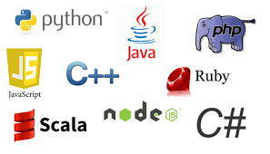

Mastering programming languages is essential for a computer science student. Here are some languages I've learned:
The proframmin languages I learnt during my 2 years of college include:
Each programming language offers unique features and advantages, and mastering them expands my ability to solve various problems and develop innovative solutions.
Data Structures involve organizing and storing data in a computer to make it efficient to access and modify. Here are some common data structures:
Understanding data structures is essential for efficient algorithm design and problem-solving in computer science.
Web Development involves building websites and web applications. Here are some subtopics:
Skills include designing user interfaces, implementing features, and optimizing performance.
Automating repetitive tasks and business processes using tools like Automation Anywhere, UiPath, and Python scripting.
Some commonly used tools and technologies that I learnt in automation include:
By leveraging these tools and technologies, automation engineers can streamline workflows, improve efficiency, and reduce human error in various industries such as finance, healthcare, and manufacturing.